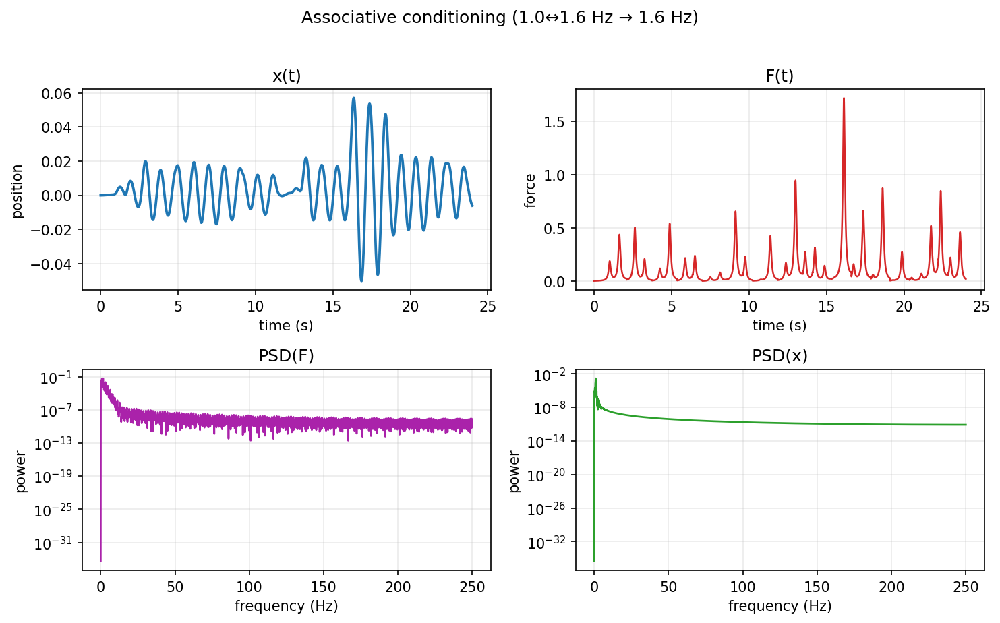
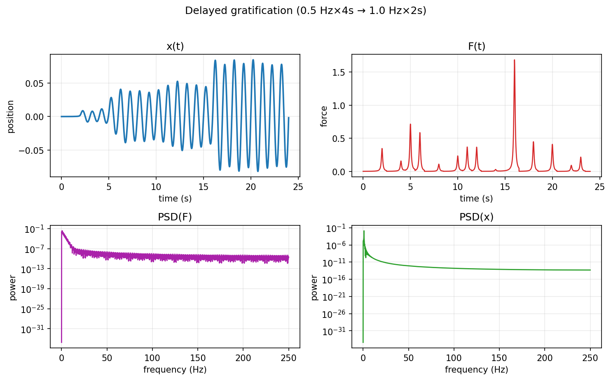

['figures/habituation_(1.3_hz_periodic).png',
'figures/sensitization_(sweep_0.6→1.0_hz).png',
'figures/anticipation_(1.0±0.2_hz_wobble).png',
'figures/associative_conditioning_(1.0↔1.6_hz_→_1.6_hz).png',
'figures/delayed_gratification_(0.5_hz×4s_→_1.0_hz×2s).png']mathematical objects in their spaces 1
behavioural experiment analysis: habituation, sensitization, anticipation, associative conditioning, and delayed gratification
This is damped-driven harmonic oscillator. This mathematical object lives in its phase-space. When interacted with, let’s say, a semiperiodic‑pulse, which deviates the object from a spectral Dirac comb. The aim is to demonstrate that a mathematical object is not a static, but a responsive process whose behaviour changes systematically as its input structure changes [@theodorsen2025]. The companion interactive page (the “experiments/osci” page with sliders and live plots) implements the same mathematical object and pulse construction with these direct control correspondences. All five behaviours come only from how a line sits relative to resonance and how strictly timing is periodic, without changing the object’s equation or adding feature modules for expression of said behaviour. This illustrates that a mathematical process can display rich, context‑dependent behaviour purely from its lawful structure and the structure of its inputs. The semiperiodic‑pulse model cleanly separates what belongs to timing (line positions and their damping or broadening) from what belongs to pulse shape (spectral envelope) and what belongs to the object (gain and phase), so each behaviour is reproducible and explainable in simple terms [@theodorsen2025].
0.0.1 The object and its world
The object is governed by the differential equation \[ \ddot{x}(t)+\gamma\,\dot{x}(t)+\omega_0^2 x(t)=F(t), \] where \[\gamma>0\] controls damping, \[\omega_0>0\] sets the natural oscillation rate, and \[F(t)\] is the external stimulus injected into the object’s world. The stimulus \[F(t)\] is built as a sum of pulses with fixed shape \[\varphi\] and times \[s_k\],[2] \[ F(t)\;=\;\sum_k A_k\,\varphi\!\left(\frac{t-s_k}{\tau_d}\right), \]
where amplitudes \[A_k\] follow a chosen distribution and \[\tau_d>0\] sets pulse duration, exactly the construction used to model semiperiodic fluctuations and their spectra in the Dirac‑comb framework. In that framework, strictly periodic arrivals create a comb of spectral lines at \[f_n=n/\langle w\rangle\], small jitter damps line mass by a known envelope without broadening, and renewal‑type randomness replaces lines by broadened lobes that trend toward the pulse spectrum, giving principled “levers” to shape behaviour without ad‑hoc rules [@theodorsen2025].
0.1 Non‑technical analogy
Think of \(F(t)\) as a rhythmic tapper that can tap perfectly on the beat, wobble slightly around the beat, or vary its spacing according to a recipe, while the oscillator \(x(t)\) is a resonant object that responds differently depending on when and how hard the taps arrive [@theodorsen2025]. Perfectly regular taps produce bright, sharp “notes” in the frequency picture; a little timing fuzziness softens the higher “overtones” without changing where they sit; and truly variable spacing smears notes into broader bands, all of which is visible in the object’s motion as louder/softer, earlier/later, or more/less focused response patterns [@theodorsen2025].
0.2 behaviour 1: Habituation (repeated identical frequency)
Stimulus: keep the pulse timing perfectly regular at a fixed frequency, e.g., 1.3 Hz, with nonzero‑mean amplitudes so the input retains a visible comb in its spectrum [@theodorsen2025]. What objecta motion \(x(t)\) starts strong and then settles into a smaller, steady rhythm. The mathematical version of “getting used to” a repeated stimulus, which here is simply the transient giving way to steady state under damping while the input spectrum stays the same [@theodorsen2025]. Note that this is principled, periodic arrivals create spectral lines at fixed places independent of the object, and damping enforces a stable long‑run amplitude, so decreasing response over time occurs even though the stimulus is unchanged, which operationalizes habituation without adding new rules [@theodorsen2025].
.png)
0.3 behaviour 2: Sensitization (sweep toward resonance)
Stimulus: slowly change (and in the interactive demo: continuously and cyclically repeat) the pulse timing so a comb line drifts toward the object’s natural rate \[f_0=\omega_0/(2\pi)\], keeping jitter small so lines remain sharp in the input [@theodorsen2025]. What the object does is to get closer a line as it gets to \(f_0\), the more strongly the object responds, showing a clear and growing amplitude even though the input’s line is just sliding in place, which looks like paying more “attention” to what helps it ring [@theodorsen2025]. The principle is that line positions are set by timing alone, while amplification is set by the object’s transfer function, so the attention‑like rise reflects resonance physics, not extra intelligence grafted on top [@theodorsen2025].
.png)
0.4 behaviour 3: Anticipation (predictable oscillation around resonance)
Stimulus: make the pulse timing wiggle predictably around the natural rate so a comb line passes in and out of the resonant neighborhood each cycle. (Interactive: wobble amplitude fixed at ±0.2 Hz around the then‑current \(f_0\); set ω₀≈2π to match the 1.0±0.2 Hz wording here.) [@theodorsen2025] The objects motion shows a smooth change in phase. Aometimes leading and sometimes lagging the stimulus—as the line crosses resonance, which reads as anticipating the “good” windows when the taps will do the most work [@theodorsen2025]. Behind it is the principle that a mathematical object’s phase relative to frequency is built into its mathematics, so predictable timing yields predictable phase shifts without changing the input spectrum’s structure, which is exactly what the semiperiodic‑pulse theory separates out [@theodorsen2025].
.png)
0.5 behaviour 4: Associative conditioning (pair, then test)
Stimulus: alternate two regular timings (for example 1.0 and 1.6 Hz) for a while, then switch to only one of them and observe the motion with a sliding frequency view. (Interactive: 8 s pairing phase with a flip every 1.25 s, then 8 s test at 1.6 Hz, cycling.) [@theodorsen2025]. The object, even after the switch, the display shows a fading echo of the removed timing for a short while and the motion rings down at that rate, which looks like a phantom association with a stimulus that is no longer present [@theodorsen2025]. This is principled because the input’s lines are determined by timing, and residuals in the display come from the sliding window and the object’s finite ring‑down, so the apparent memory is a faithful artifact of how signals persist and are estimated rather than hardcoded [@theodorsen2025].

0.6 behaviour 5: Delayed gratification (cycle poor and good conditions)
Stimulus: alternate off‑resonant tapping for a longer stretch and near‑resonant tapping for a shorter stretch in a repeating cycle (interactive: 4 s at 0.5 Hz then 2 s at 1.0 Hz) [@theodorsen2025]. The object stays quiet during the poor segment but grows quickly when the good segment begins, then subsides, which looks like holding back and then capitalizing when conditions turn favorable, matching the intuition of saving effort for the moments that count [@theodorsen2025]. This is principled as the input spectrum encodes the energy that can couple well to the object, and the object’s dynamics ensure that energy appears most when lines align, giving a natural version of strategic timing without any extra decision layer [@theodorsen2025].

0.6.1 notes
The object is the damped, driven harmonic oscillator \[ \ddot{x}(t)+\gamma\,\dot{x}(t)+\omega_0^2 x(t)=F(t) \], where \[F(t)\] is a sum of fixed‑shape pulses arriving with semiperiodic timing as in the Dirac‑comb model of deviations under jitter and renewal randomness. The goal is to compute reproducible static figures for five protocols by scripting the same pulse and oscillator logic used in the interactive page and saving PNGs for the article. Quarto will then embed the generated files so non‑specialists can see “before and after” snapshots of the object’s behaviour without running widgets during reading.
0.7 Figures for the report
Each panel shows the same object under a different stimulus protocol, linking a clear, non‑technical description to a precise, reproducible signal model based on semiperiodic pulses and their spectral signatures as developed in the Dirac‑comb analysis [@theodorsen2025]. For complete parity with the live demo you can regenerate the static figures after adjusting \(\omega_0\) (e.g. set \(\omega_0=2\pi\) for the anticipation snapshot) or introduce a small nonzero jitter to visualize harmonic mass damping; these do not change any qualitative conclusions.
Strictly periodic pulses at 1.3 Hz produce a stable comb in PSD(F), while the object’s response decays from transient to steady amplitude, operationalizing “getting used to” a repeated stimulus via damping. [web:273][web:274]
A comb line sliding toward the natural rate f0 causes steadily growing response in x(t) and increased PSD(x) power at alignment, illustrating attention‑like amplification near resonance. [web:273][web:274]
Predictable line motion around resonance yields smooth lead‑lag phase shifts in x(t), which appear as anticipating windows of high coupling without changing the input’s comb structure. [web:273][web:274]
Pairing two lines then switching to one leaves fading residual energy at the removed line in sliding PSD and ring‑down in x(t), a principled, linear “phantom” association. [web:273][web:274]
Cycling poor and good alignment suppresses response in off‑segments and reinforces it in near‑resonant windows, mimicking strategic timing through transfer‑function alignment. [web:273][web:274]
Deviations from spectral Dirac comb due to semiperiodic pulses [@theodorsen2025] as the theoretical spine for line placement, jitter‑induced harmonic‑mass damping, and renewal‑induced broadening used in these figures.
0.8 References
need to add